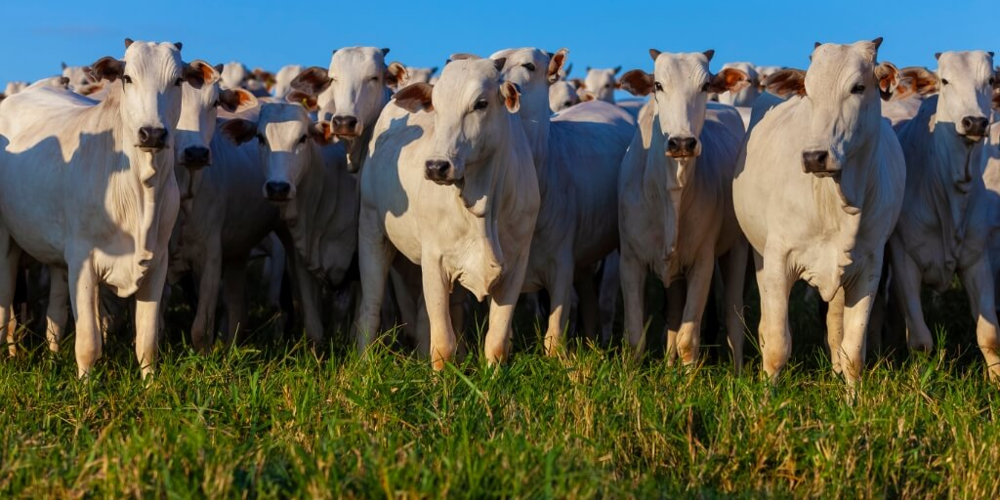

Ferrari

Agropecuária é a junção das atividades da agricultura e pecuária. Embora o termo seja empregue em geral para definir o conjunto das atividades agrícolas, também pode ser utilizado para explicar a complexa ligação entre estas duas funções, e o estudo da forma como esta relação é feita, para atender o consumo humano e/ou para o fornecimento de matérias-primas na fabricação de roupas, medicamentos, biocombustíveis, produtos de beleza, entre outros.[1] A atividade de agropecuária é exercida tanto em larga escala, quanto por pequenos produtores que utilizam práticas tradicionais, onde o conhecimento das técnicas é repassado através de gerações. 
SF90 XX: Versão mais potente: A SF90 XX é uma versão ainda mais potente e leve, com 1030 cv e 10 kg a menos. Melhorias: Motor V8 aprimorado, motores elétricos mais potentes e uso de fibra de carbono. Outros detalhes: SF90 como modelo F1: A SF90 é também o nome do carro de Fórmula 1 da Ferrari para a temporada de 2019. Lançamento: A SF90 foi lançada em 2019, como parte das celebrações do 90º aniversário da Ferrari. Descontinuação: A Ferrari anunciou que a SF90 Stradale e a 812 GTS estão descontinuadas.